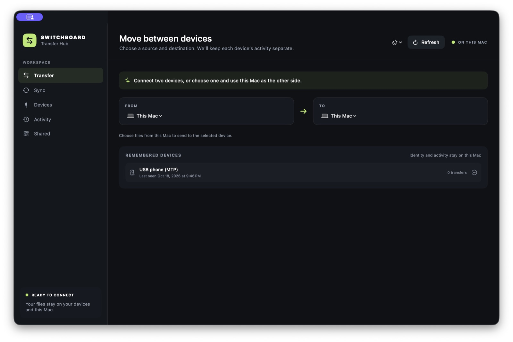

Need the app first? Download Transfer Hub for Mac. The current early-access build needs macOS 14 or later and an Apple silicon Mac. Read the install help if macOS shows a warning.
Copy photos from Android to Mac with a cable
- Plug in the phone. Connect your Android phone to the Mac with its USB cable. Unlock it and leave the screen on.
- Tell the phone to share files. If Android shows a USB or charging notification, tap it and choose File transfer or Transferring files. Phone wording may vary. No notification? Keep going, then try the quick fixes below.
- Open Transfer Hub. On the Mac, click Devices in the left side of the app, then click Scan USB or Scan for phone.
- Open your pictures. When your phone appears, click it. Camera photos are usually in DCIM, then Camera. Pictures from other apps may be in Pictures or Download.
- Choose what to copy. Click the little circle beside each photo you want. Click Select all if you want every file currently listed.
- Save to the Mac. Click Save selected, choose a place such as Downloads or Pictures, and let the copy finish.

Check a picture before copying it
Click the eye-shaped button beside a file to preview it. This is handy when names like IMG_2048 do not tell you which photo is which.
If your phone does not appear
- Unlock the phone and leave it awake.
- Unplug and reconnect the cable. Look for a USB notification and choose File transfer.
- Try a different cable. Some cables charge a phone but cannot carry files.
- Try another Mac port, then click Scan USB again.
- Connect directly to the Mac instead of through a hub, if possible.
You do not need Developer options or USB debugging for this cable method. If it still will not work, try the phone-not-showing troubleshooting guide.
Would you rather not use a cable?
Use the phone and Mac on the same Wi-Fi network, start sharing in the Mac app, and scan a QR code. The phone opens a web page—no phone app needed. Read the simple Wi-Fi walkthrough.
Common questions
Does copying a photo remove it from my phone?
No. Saving to Mac creates a copy. Your original photo remains on Android.
Can I move many photos together?
Yes. Select several circles or click Select all, then click Save selected.
Where are my camera photos?
On most phones, open DCIM → Camera. Photos from messaging apps may be in Pictures or Download.